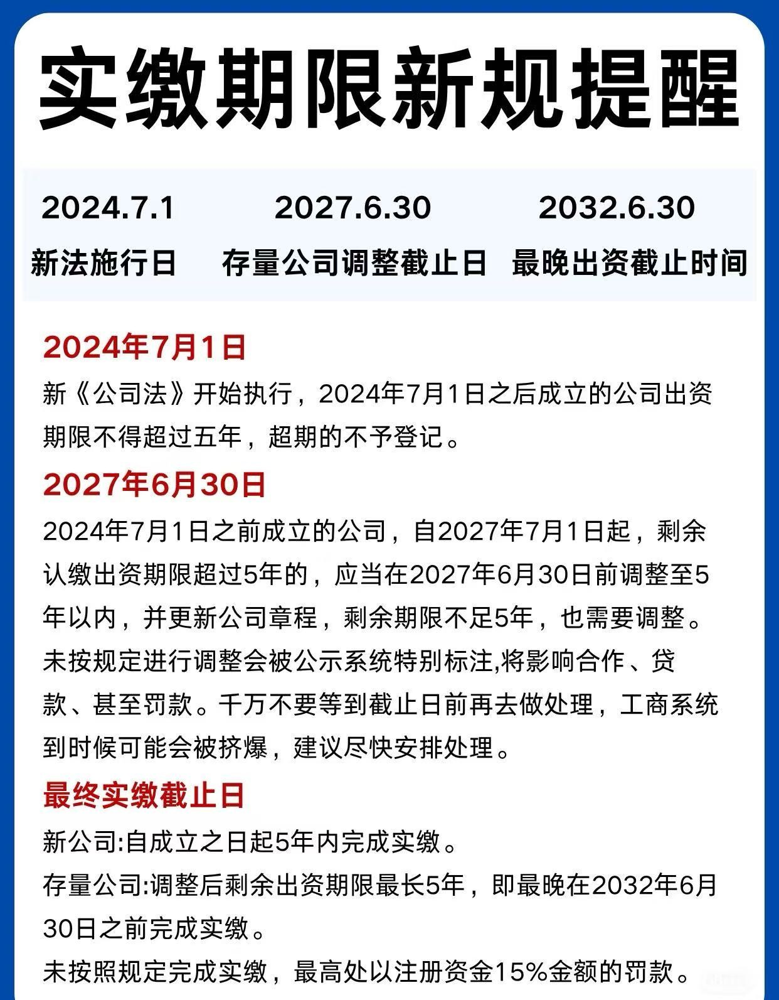

新《公司法》实缴期限说清楚了：不同年份成立的公司分别怎么做

新《公司法》实施后，关于注册资本实缴的问法很多：我这家公司要不要调？调到哪一年？什么时候必须真的把钱缴进去？多个公司成立年份不一样，是不是每个都要处理？这些问题其实有一套清晰的判断顺序——先看公司成立日在 2024 年 7 月 1 日之前还是之后，再对照三个关键日期，最后按步骤办理。本文按这个顺序逐一说明，供企业主和法定代表人对照自查。

一、先把三个日期记清楚
整件事围绕三个时间点展开，先记住它们，后面所有的判断都由此推导。
- 2024 年 7 月 1 日：新《公司法》和《国务院关于实施〈中华人民共和国公司法〉注册资本登记管理制度的规定》（国务院令第 784 号）开始施行。这天是「新公司」和「存量公司」的分界线。
- 2027 年 6 月 30 日：存量公司的「调整截止日」。在这之前成立的有限责任公司，如果剩余认缴出资期限超过 5 年，必须在此之前把期限调整到 5 年以内，并写进公司章程。
- 2032 年 6 月 30 日：最晚出资截止日。存量公司完成调整后，剩余期限最长 5 年，也就是说最晚要在这一天之前把认缴的出资缴足。
一句话概括：2024 年 7 月 1 日是分界，2027 年 6 月 30 日是「改章程」的截止日，2032 年 6 月 30 日是「缴完钱」的最终期限。
二、对号入座：你的公司属于哪一类
先按营业执照上的「成立日期」判断，不要把多家公司混在一起看。成立年份不同，适用的规则完全不同。
第一类：2024 年 7 月 1 日及之后成立的公司（新公司）
有限责任公司股东认缴的出资额，应当自公司成立之日起 5 年内缴足。出资期限不得超过 5 年，超期的登记申请不予办理。也就是说，这类公司从设立那天起，章程里的出资期限就应当写在 5 年以内，到期必须实缴到位，不需要等到 2027 年再去调整。
第二类：2024 年 6 月 30 日及之前成立的公司（存量公司）
这类公司有三年过渡期。判断点是：自 2027 年 7 月 1 日起，剩余的认缴出资期限是否超过 5 年。
- 如果超过 5 年：必须在 2027 年 6 月 30 日前把剩余期限调整到 5 年以内，并修改公司章程、办理备案。调整后最晚在 2032 年 6 月 30 日前缴足。
- 如果不足 5 年（正好等于 5 年也不需要）：不需要调整出资期限，按原章程约定的期限缴纳即可。这是网上流传版本里最常见的错误——「剩余期限不足 5 年也要调整」的说法并不准确，市场监管总局已有明确答复。
第三类：股份有限公司
存量股份有限公司的发起人，应当在 2027 年 6 月 30 日前按照其认购的股份全额缴纳股款，适用的是「缴足」而不是「调整期限」。
三、名下有不止一家公司，怎么逐家自查
很多人同时是几家公司的股东或法定代表人，成立年份横跨新旧规则。正确做法是把每家公司单独拿出来过一遍，不要按「最老那家」或「最新那家」一套标准处理。建议按下面五步逐家检查：
- 第一步：查成立日期。翻出每家公司的营业执照或国家企业信用信息公示系统页面，确认成立日在 2024 年 7 月 1 日之前还是之后，分开列出。
- 第二步：查章程里的出资期限。找到公司章程中股东认缴出资额和出资时间的条款，算出从 2027 年 7 月 1 日起还剩多少时间。
- 第三步：按类别标注处理方式。新公司标注「按成立起 5 年」；存量公司标注「需调整」或「无需调整」；股份公司标注「2027 年 6 月 30 日前缴足」。
- 第四步：对需要调整的公司办手续。召开股东会作出修改章程的决议，办理章程备案，并在相关信息产生之日起 20 个工作日内通过国家企业信用信息公示系统向社会公示。
- 第五步：排缴资时间表。把每家公司调整后的出资期限登记在册，提前安排资金或合法的非货币出资，不要都压到 2032 年 6 月 30 日之前。
如果公司出资期限或注册资本明显异常，登记机关还可以结合经营范围、经营状况、股东出资能力、主营项目和资产规模进行研判；认定违背真实性、合理性原则的，可以依法要求及时调整。
四、几个容易搞错的地方
- 误区一：存量公司「剩余期限不足 5 年也要调整」。按国务院规定和市场监管总局答复，自 2027 年 7 月 1 日起剩余期限不足 5 年的，不需要调整。
- 误区二：实缴必须交现金。出资方式可以是货币，也可以用实物、知识产权、股权等可以用货币估价并依法转让的非货币财产作价出资，但需符合相应的评估和权属要求。
- 误区三：先把期限调长再说。新规的方向是缩短出资周期，出资期限和注册资本明显异常的公司会被要求调整，不建议用拉长年限的方式规避。
- 误区四：调完章程就万事大吉。调整出资期限只是完成合规的一步，章程约定的期限到期时仍需实缴到位，未按期缴纳同样会面临法律后果。
五、不按规定处理会怎样
后果分两层，需要分开理解：
- 公司未按国务院规定调整出资期限、注册资本的，由公司登记机关责令改正；逾期未改正的，登记机关会在国家企业信用信息公示系统作出特别标注并向社会公示。这类标注会在合作方、金融机构查询企业信息时被看到，对业务往来和融资产生实际影响。
- 股东或发起人未按章程缴纳出资、公司未依法公示相关信息的，依照《公司法》和《企业信息公示暂行条例》的有关规定处罚。其中，未按期缴纳出资经责令改正仍不改正、情节严重的，可能面临按未出资金额一定比例的罚款，对直接负责的主管人员和其他直接责任人员也可能处以罚款。具体金额和责任认定以市场监管部门依法作出为准。
需要特别说明：网上流传的「最高按注册资金 15% 罚款」并非表述完整。相关规定指向的是未出资金额一定比例、并区分情节轻重，不能简单等同于按注册资本计算，也不意味着所有未调整的公司都会被罚到这个标准。
六、什么时候办比较合适
需要调整的公司，建议在 2027 年 6 月 30 日之前留出充足时间完成股东会决议、章程备案和公示，不要集中挤在截止日前办理。调整完成后，还要按新期限安排实缴资金或合法的出资方式，避免到期无法缴纳。
集团的企业服务板块可协助企业梳理出资期限、办理章程调整与信息公示相关事务，具体办理要求请以属地登记机关的最新规定为准。